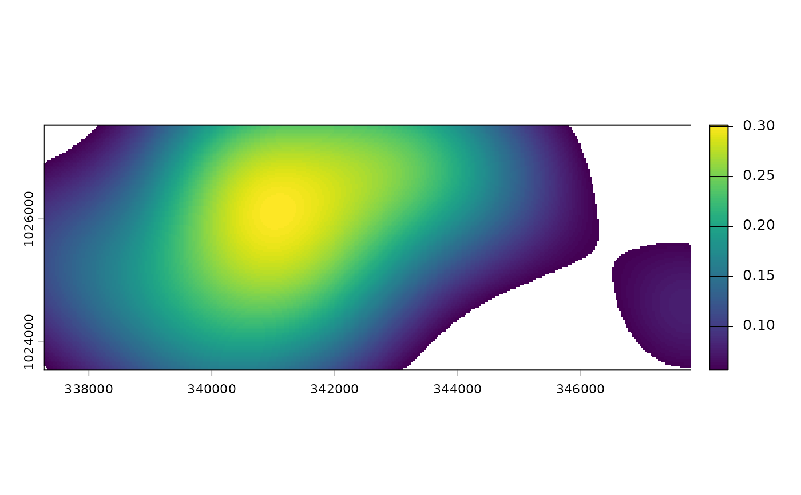

Estimate species spatial coverage from camera trap detections
Source:R/ct_spatial_coverage.R
ct_spatial_coverage.RdEstimates spatial coverage a species from camera-trap detection data using a kernel density approach. The kernel bandwidth \(\hat{\sigma}\) is estimated from the spatial spread of detection sites via Silverman's reference bandwidth rule (Silverman 1986).
Usage
ct_spatial_coverage(
data,
site_column,
longitude,
latitude,
crs = c(4326, NULL),
study_area = NULL,
mask = NULL,
resolution,
isopleth = 0.95,
n_boot = 200
)Arguments
- data
A data frame of species detection records.
- site_column
Column name of the camera-trap site identifier.
- longitude
Column name of site longitude (or UTM easting).
- latitude
Column name of site latitude (or UTM northing).
- crs
A vector of length two specifying the coordinate reference systems:
c(crs_in, crs_out).crs_inrepresents the current CRS of the data (e.g., 4326 for latitude/longitude).crs_outrepresents the CRS to transform into (e.g., "EPSG:32631", a UTM EPSG code) for accurate distance calculations. Ifcrs_outis NULL, no transformation is applied. Defaults toc(4326, NULL)
- study_area
Optional
sfpolygon defining the full study extent. If provided, the raster grid is extended to cover the polygon.- mask
Optional
sfpolygon (or multipolygon) of areas to exclude from the coverage estimate (e.g. water bodies, settlements, cliffs). Raster cells inside the mask are set toNAin the output. Note that Euclidean distances are used throughout; the mask filters the final surface but does not reroute distance calculations around barriers.- resolution
Numeric. Side length of one grid cell in the units of the active CRS (metres if projected).
- isopleth
Numeric in
(0, 1]. Isopleth level for home-range delineation.0.95(default) returns the smallest area containing 95 % of the total kernel density - the standard 95 % kernel home range.- n_boot
Integer. Bootstrap resamples for the standard error of \(\hat{\sigma}\). Set to
0to skip (default200).
Value
A named list with three elements:
Coverage rasterA
SpatRaster(terra) containing the kernel density surface, clipped to theisoplethisopleth, with masked and out-of-isopleth cells set toNA.BandwidthA named numeric vector:
sigma(estimated bandwidth in CRS units),SE(bootstrap SE;NAifn_boot = 0),CI_lowandCI_high(95 % bootstrap CI),n_sites, andisopleth.Coverage statsA one-row tibble: coverage area in km^2, \(\hat{\sigma}\) +/- SE, detection-site count, and isopleth level.
Details
The term home range is typically associated with dynamic movement data, such as those recorded by radio-tracking or GPS devices, which provide continuous or near-continuous tracking of an individual animal's movements. Since camera traps are static and only capture presence/absence or activity within their specific locations, the concept of home range might not fully apply.
Method
Each camera station where the species was detected contributes equally (binary detection). A Gaussian kernel is centred at each detection site and the average surface is computed:
$$ \hat{f}(\mathbf{x}) = \frac{1}{n} \sum_{i=1}^{n} \exp\!\left(-\frac{\|\mathbf{x} - \mathbf{x}_i\|^2}{2\,\hat{\sigma}^2}\right) $$
Bandwidth estimation
The bandwidth \(\hat{\sigma}\) is the reference bandwidth (Silverman 1986, eq. 4.14, extended to 2-D):
$$\hat{\sigma} = \sqrt{\hat{\sigma}_x \, \hat{\sigma}_y} \; n^{-1/6}$$
where \(\hat{\sigma}_x\) and \(\hat{\sigma}_y\) are the standard deviations of the detection-site coordinates and \(n\) is the number of detection sites. This is the asymptotically MISE-optimal bandwidth under a bivariate normal reference distribution. It shrinks with more sites and widens when detections are spatially dispersed.
The standard error of \(\hat{\sigma}\) is obtained by nonparametric
bootstrap: sites are resampled with replacement n_boot times and
\(\hat{\sigma}\) recomputed each time; the SE is the standard deviation
of those bootstrap estimates, and the 95 % CI is their 2.5th - 97.5th
percentiles.
References
Silverman, B. W. (1986). Density Estimation for Statistics and Data Analysis. Chapman and Hall, London.
Worton, B. J. (1989). Kernel methods for estimating the utilization distribution in home-range studies. Ecology, 70(1), 164-168. doi:10.2307/1938423
Examples
library(dplyr)
cam_data <- system.file("penessoulou_season2.csv", package = "ct") |>
read.csv() %>%
dplyr::filter(Species == "Erythrocebus patas", Count > 0)
spc <- ct_spatial_coverage(
data = cam_data,
site_column = Camera,
longitude = Longitude,
latitude = Latitude,
crs = "EPSG:32631",
resolution = 30 # meter
)
# Plot coverage raster
library(terra)
#> terra 1.9.34
terra::plot(spc$`Coverage raster`)

## Bandwidth estimate with uncertainty
spc$Bandwidth
#> sigma SE CI_low CI_high n_sites isopleth
#> 1225.784 164.128 799.379 1418.791 13.000 0.950
## Coverage area summary
spc$`Coverage stats`
#> # A tibble: 1 × 5
#> `Spatial coverage` Sigma `Bandwidth SE` `Detection sites (n)` `Isopleth level`
#> <dbl> <dbl> <dbl> <int> <dbl>
#> 1 33.9 1226. 164. 13 0.95